Not Yet, Screen by Screen
Not Yet is easier to show than to describe, so here is the whole thing, one screen at a time. Every screen below is the real extension running in Safari. The store is a made-up demo, so the coat and the prices aren't real, but everything Not Yet does in these pictures is exactly what it does on your own device.
The pause, right where you'd pay Free
Not Yet watches for checkout and payment pages. When one opens, it steps in before you can pay and asks one honest question, then gives you a code to retype. The code is new every time the page loads, so there's nothing to memorize and nothing to paste. It's checked character by character as you type, and if one doesn't match, Not Yet points to exactly which one instead of making you start over.
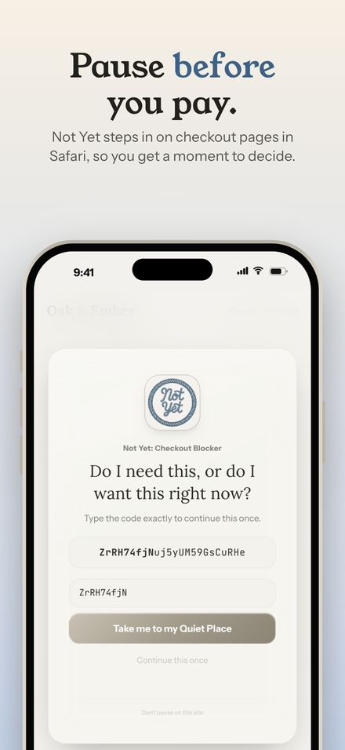
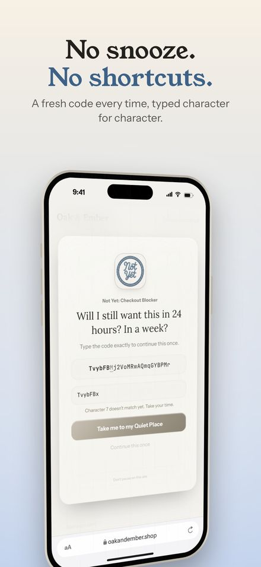
There's no snooze button and no "skip for today." The point is a real pause, not a puzzle you solve once and remember.
Three ways to pause Free
Retyping a code is the default, and it's always available. If words work better for you than codes, you can answer a reflection question instead. Or you can just breathe while a slow timer fills in. You pick one method in Settings, and every pause uses it.
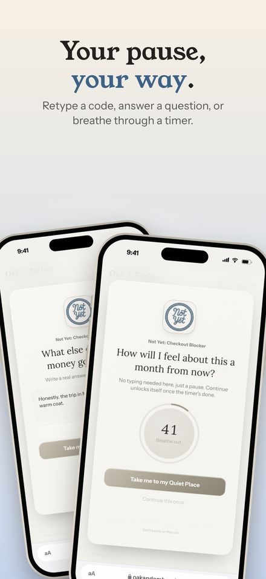
Name the price, keep the money Free
Once you've typed the code, Not Yet shows the order total it found on the page. If you head to your Quiet Place instead of buying, that amount counts toward what you saved. It only ever counts a real amount you chose to skip, never a guess, so the number in Your Stats is money you actually kept.
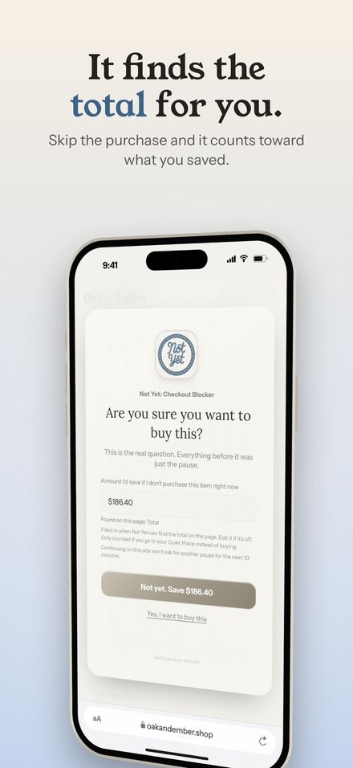
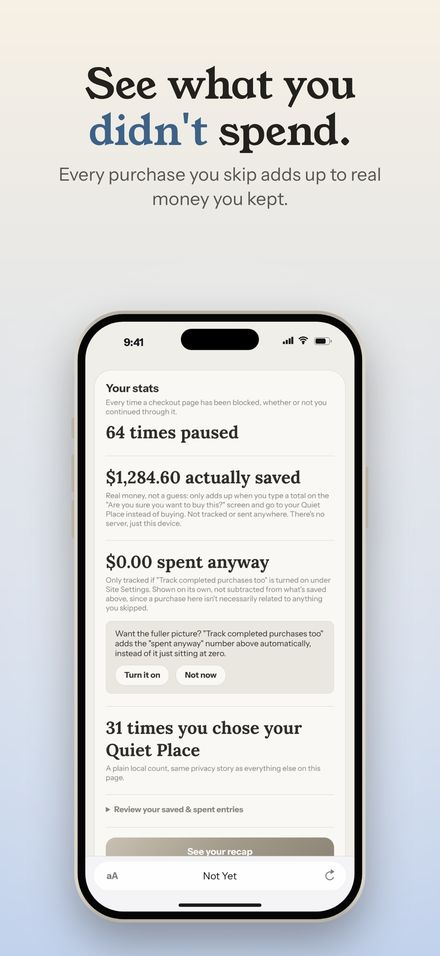
Somewhere calmer to go Free
Every pause has one big button: take me to my Quiet Place. It's a quiet page with a mood check-in, a few things to do instead, and a place to note one thing you're proud of today. It's free and always will be, because the way out of an impulse shouldn't come with a purchase prompt of its own.
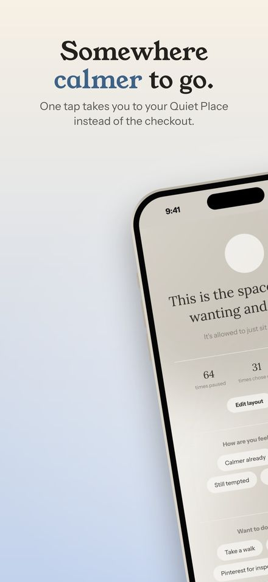
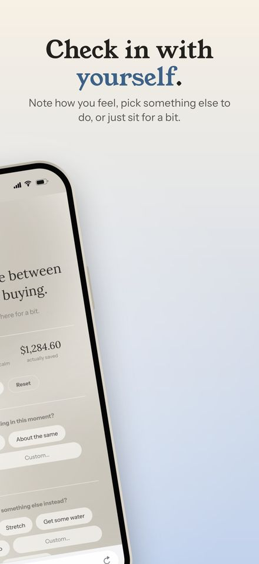
Your week, at a glance Free Premium
Every pause is logged on your device. The recap shows your basic totals for free. Premium adds the weekly trend, where your pauses happen most, your moods, and what you chose to do instead.
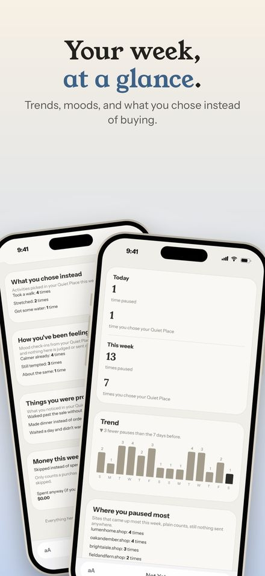
Made for parents, and for partners Premium
Guard Mode puts a PIN in front of anything that would make Not Yet easier to get past, like turning off a category or switching to an easier way to pause. Making things stricter never needs the PIN. If you're setting Not Yet up on a child's device, you hold the PIN, and it stays on when they want it off.
The welcome guide starts by asking who Not Yet is for: yourself, a partner, your kids, or someone else. Couples sharing a budget can set it up together and decide who keeps the PIN. Turning Guard Mode on is part of Premium, but keeping it on never depends on a subscription.
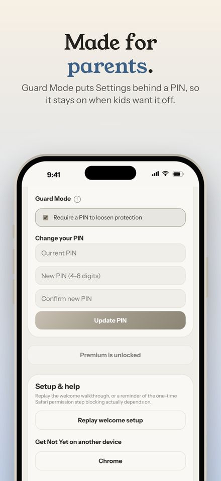
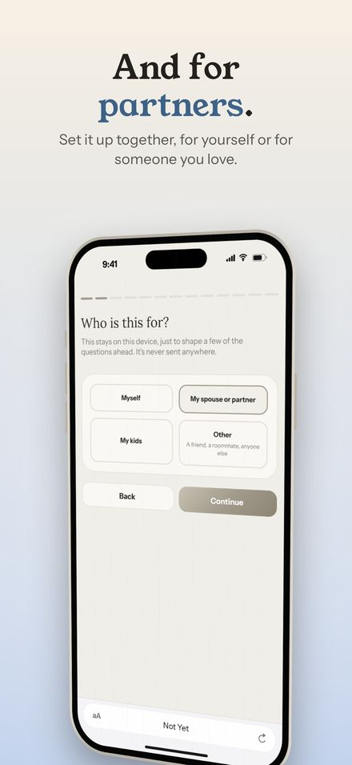
Shopping, food, betting Free
Pick from 14 categories, from online clothing and food delivery to buy now, pay later and sports betting, or add any site of your own. Betting sites get their own set of questions, written for that moment specifically.
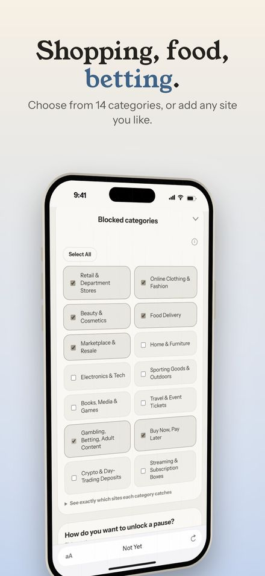
Time limits on any site Free
Some sites are less about one purchase and more about the hour that disappears. Give them a time limit, anywhere from 1 to 240 minutes per visit. A small countdown sits in the corner while you're there, and when time's up, Not Yet takes you to your Quiet Place or shows a pause.
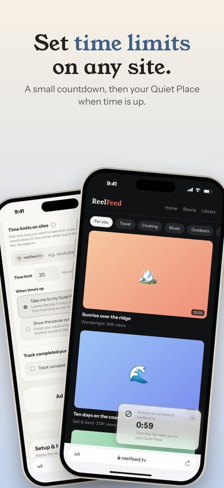
Catch the Buy now button Free Premium
Turn on the buy-button shield and Not Yet puts a soft cover over buy buttons on the sites you track, before checkout even starts. Tap it and you get the same pause. Checkout and place-order buttons are covered for free. Premium also covers wallet and pay-later buttons.
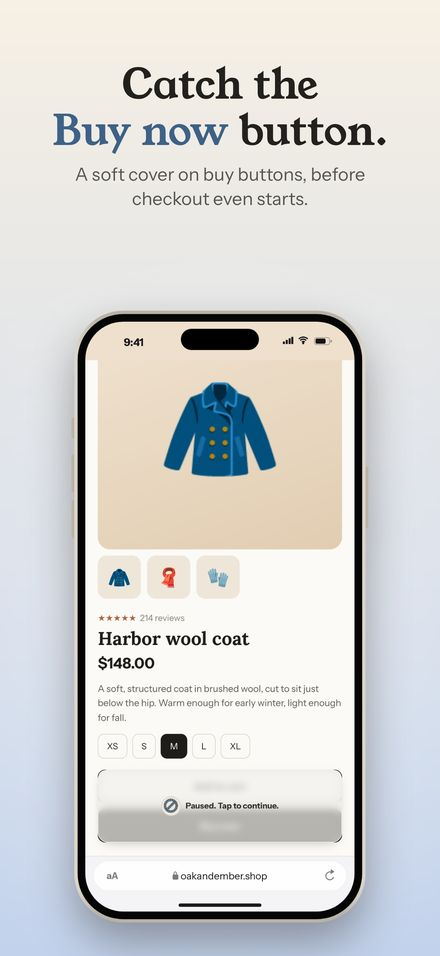
Make it yours Free Premium
Four calm themes come free: Calm, Silver, Sky, and Violet. None of them are red, and none of them shout. Premium adds your own colors and a photo board in the Quiet Place, for pictures of whatever you're saving toward.
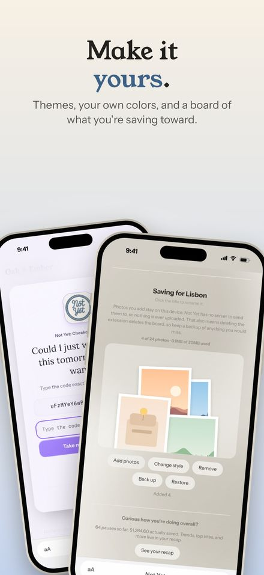
Nothing leaves your device
Not Yet has no account to create and no server to send anything to. Your pauses, stats, moods, and photos all stay on your device. There's no tracking and there are no ads. That isn't a setting you have to find. It's how the app is built.
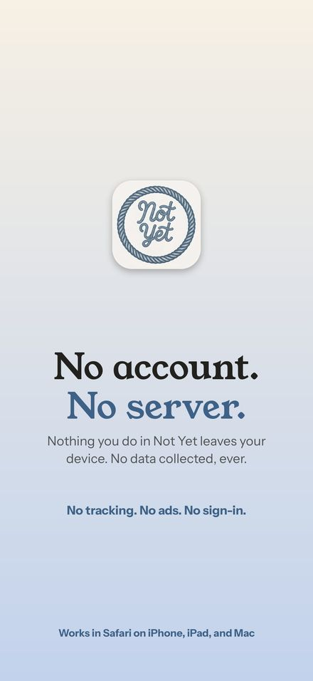
The same pause on iPad and Mac
Not Yet works in Safari on iPhone, iPad, and Mac, and looks at home on each.
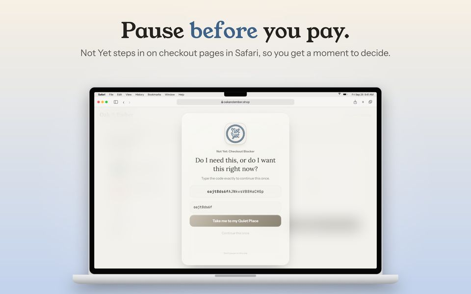
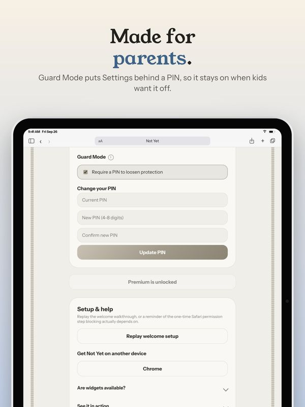
Want to flip through all of them? Every screen for iPhone, iPad, and Mac is in the app previews on the homepage.
Not Yet is on the Chrome Web Store now and coming to the App Store for iPhone, iPad, and Mac. The pause, the Quiet Place, and everything that protects you stay free.